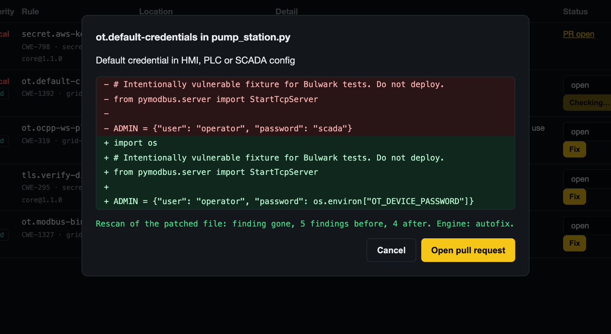

Code scanning with OT protocol rules, verified fix pull requests, SBOM and an evidence report. Runs in CI, in the cloud or air-gapped.
bulwark-cloud.onrender.com · github.com/hunterh37/Bulwark · version 1.1.0 · 15 November 2026
CISA advisory AA23-335A, Unitronics PLC and HMI campaign: at least 34 water and wastewater victims among at least 75 devices.1
CISA ICS advisories this year describe charging backends that accept OCPP WebSocket connections from anyone who knows a station id.2
Annex I Part II asks manufacturers for a machine-readable SBOM and vulnerability handling. Reporting duties started 11 Sep 2026 per most sources read.3
Engineering teams of 20 to 500 at OT and energy software vendors, charging network operators and utilities with in-house SCADA code. Most have no application security staff. IEC 62443-4-1 audits and CRA duties land on the same team that writes the code.
Snyk, Semgrep, GitHub Advanced Security and Aikido sell code scanning at $19 to $30 per committer per month or $300 to $600 per team. None of their public pages read in our research list an OT protocol rule set.4 OT security vendors watch networks and firmware, after the code has shipped.
GitHub Action on pull requests, Bulwark Cloud on a daily schedule, or the Edge runner inside a plant network. 17 rules for Modbus, DNP3, IEC 61850, IEC 104, OCPP, OPC UA, BACnet, credentials, secrets and TLS, plus npm, PyPI and Go dependencies.
CWE id and grid-impact flag on each finding. Advisories in the CISA Known Exploited Vulnerabilities catalog go first. Test and example code is kept out of the count. Triage state follows a finding across scans.
Seven rules have an autofix. Bulwark patches the line, rescans the patched file and opens a pull request when the finding is gone and nothing new appears.
CycloneDX 1.5 SBOM per repository. Printable evidence report with scope, commits, findings, fixes and audit log, mapped to IEC 62443-4-1 practice areas, CRA Annex I Part II and NERC CIP-013.
- uses: hunterh37/Bulwark@main
with: { fail-on: high }

Portal, Findings: the fix dialog shows the patch and the rescan result before the pull request opens. Screenshot from version 1.1.0.
Findings on 15 public OT repositories (10,233 files): rules 1.0.0, then 1.1.0. 145 more sit in test and example paths at low severity.
Hand-labeled precision of the 47 live findings: 31 true, 16 false. Most false ones are library internals that wrap an insecure constructor.
Precision and recall on 77 labeled lines. 11 of 11 autofix cases verified. Gate runs in CI on every push.
What changed: 1.0.0 matched any line that mentioned a protocol identifier, so three rules produced 4,829 findings. 1.1.0 matches the call or setting that creates an insecure endpoint and skips comments, imports, declarations, translation files and loopback binds.
What is not measured: recall on real repositories. The public repositories have no ground-truth list of insecure lines.
packages/cloud/eval/FIELD.md · REPORT.md · field-labels.json
| Rule (live findings only) | Live | True | False | Precision |
|---|---|---|---|---|
| ot.iec61850-mms-plain | 15 | 13 | 2 | 0.87 |
| ot.dnp3-no-sa | 13 | 5 | 8 | 0.38 |
| ot.opcua-security-none | 8 | 4 | 4 | 0.50 |
| ot.default-credentials | 5 | 4 | 1 | 0.80 |
| ot.modbus-tcp-server | 3 | 2 | 1 | 0.67 |
| ot.modbus-write-unchecked | 3 | 3 | 0 | 1.00 |
| Total | 47 | 31 | 16 | 0.66 |
Repositories: pymodbus, libmodbus, libiec61850, lib60870, stepfunc/dnp3, mobilityhouse/ocpp, MicroOcpp, opcua-asyncio, open62541, BAC0, Scada-LTS, FUXA, OpenPLC_v3, SteVe, libocpp, at pinned commits.
The GitHub Action and the Edge runner need no account. An engineer adds three lines to a workflow and gets OT findings, SARIF and an SBOM on the next pull request.
Team, $49 per repository per month: more than 3 repositories in Bulwark Cloud, scheduled rescans, alerts, fix pull requests, evidence report. Enterprise: air-gapped kits and a self-hosted control plane.
The evidence report and SBOM are needed at every release and every audit. Findings history and triage decisions live in Bulwark.
| Product | Price |
|---|---|
| GitHub Code Security / Secret Protection | $30 / $19 per active committer per month |
| Semgrep Teams | from $30 per contributor per month |
| Snyk Team | from $25 per month, up to 10 developers |
| Aikido Basic / Pro | $300 / $600 per month, 10 users |